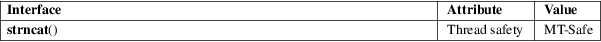

strncat − concatenate a null-padded character sequence into a string
Standard C library (libc, −lc)
#include <string.h>
char
*strncat(char *restrict dst, const char
src[restrict .sz],
size_t sz);
This function catenates the input character sequence contained in a null-padded fixed-width buffer, into a string at the buffer pointed to by dst. The programmer is responsible for allocating a destination buffer large enough, that is, strlen(dst) + strnlen(src, sz) + 1.
An implementation of this function might be:
char *
strncat(char *restrict dst, const char *restrict src, size_t
sz)
{
int len;
char *p;
len =
strnlen(src, sz);
p = dst + strlen(dst);
p = mempcpy(p, src, len);
*p = '\0';
return dst;
}
strncat() returns dst.
For an explanation of the terms used in this section, see attributes(7).

C11, POSIX.1-2008.
POSIX.1-2001, C89, SVr4, 4.3BSD.
The name of this function is confusing. This function has no relation to strncpy(3).
If the destination buffer is not large enough, the behavior is undefined. See _FORTIFY_SOURCE in feature_test_macros(7).
This function can be very inefficient. Read about Shlemiel the painter.
#include
<err.h>
#include <stdio.h>
#include <stdlib.h>
#include <string.h>
#define nitems(arr) (sizeof((arr)) / sizeof((arr)[0]))
int
main(void)
{
size_t maxsize;
// Null-padded
fixed-width character sequences
char pre[4] = "pre.";
char new_post[50] = ".foo.bar";
// Strings
char post[] = ".post";
char src[] = "some_long_body.post";
char *dest;
maxsize =
nitems(pre) + strlen(src) − strlen(post) +
nitems(new_post) + 1;
dest = malloc(sizeof(*dest) * maxsize);
if (dest == NULL)
err(EXIT_FAILURE, "malloc()");
dest[0] = '\0';
// There’s no ’cpy’ function to this
’cat’.
strncat(dest, pre, nitems(pre));
strncat(dest, src, strlen(src) − strlen(post));
strncat(dest, new_post, nitems(new_post));
puts(dest); //
"pre.some_long_body.foo.bar"
free(dest);
exit(EXIT_SUCCESS);
}
string(3), string_copying(3)